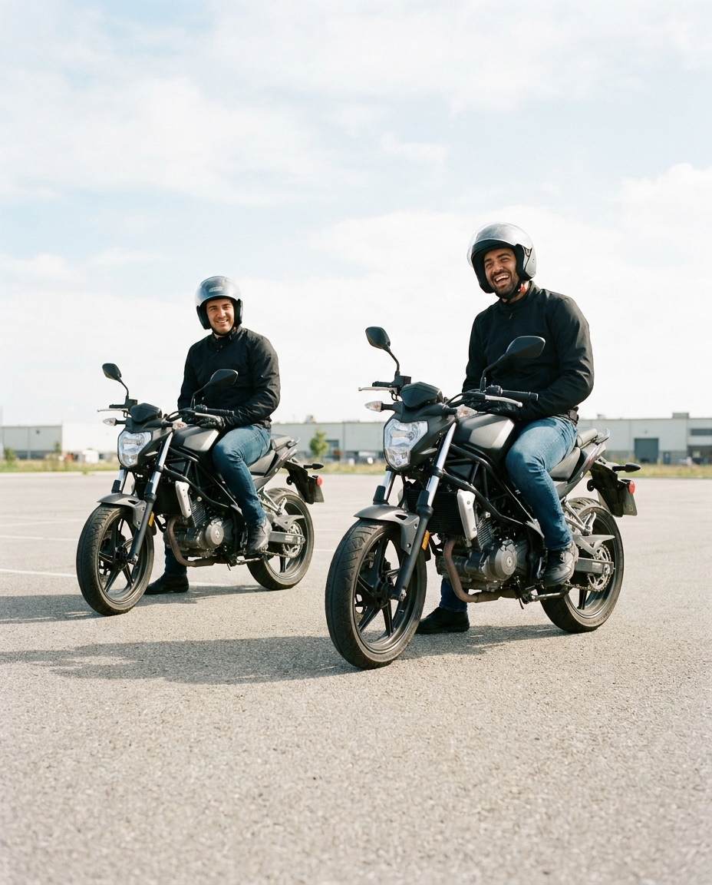
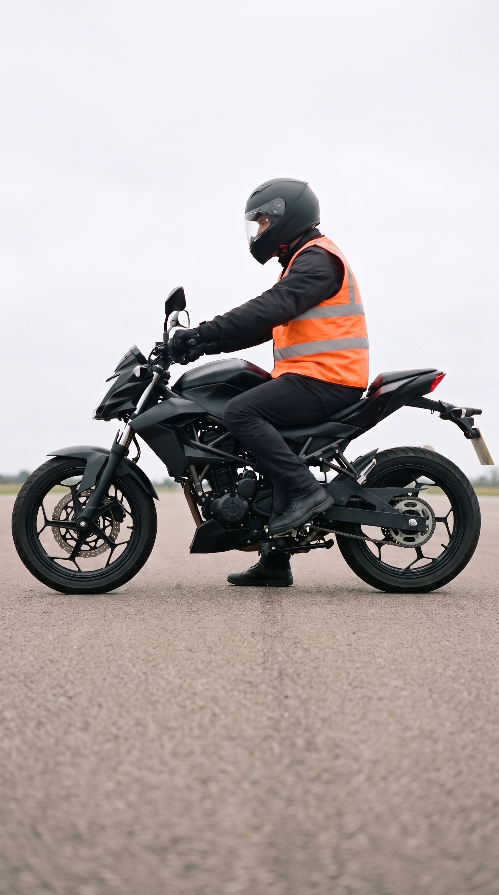
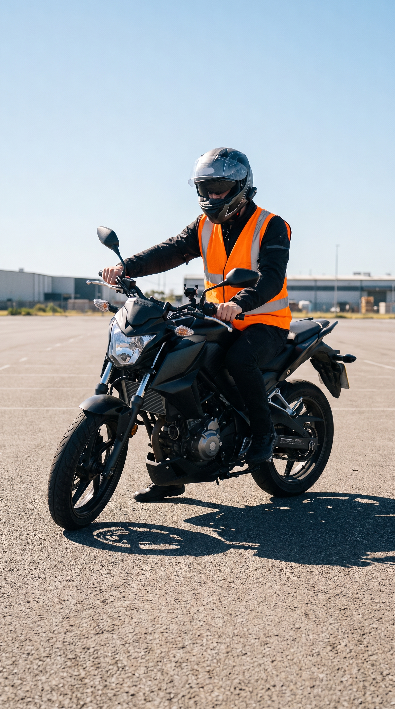

חמש ידיות. שתיים ברגליים, שלוש בידיים. זה מה שיש ללמוד, ואנחנו מראים לכם איפה כל אחת מהן יושבת.
שיעור אחד על אופנוע, בלי התחייבות להמשך. אם אחריו תחליטו שזה לא בשבילכם, נשמח שבאתם.

חמש ידיות.
שתיים ברגליים, שלוש בידיים.
שעה אחת, מגרש סגור, מדריך אחד עליכם.
לא צריך להביא כלום. קסדה וכפפות מחכות לכם במקום.

אנחנו יודעים שאתם עובדים. רוב השיעורים אצלנו נופלים אחרי חמש, ובשישי בבוקר המגרש הכי ריק.
שיעור ניסיון על אופנוע
250 ₪
משלמים בסוף השיעור, לא לפניו. אין דמי הרשמה ואין תשלום על הקסדה.